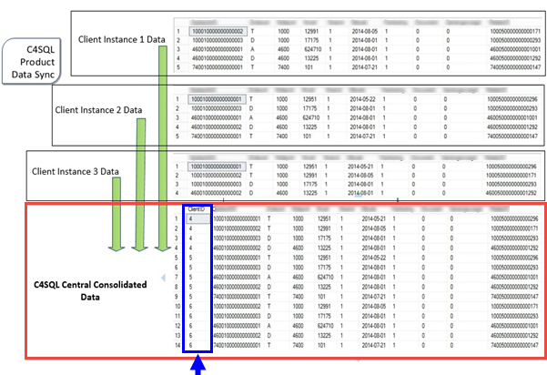

Data Synchronisation Overview
A major feature in Conductor4SQL is its data synchronisation capabilities which has many business benefits, such as centralised reporting.
Conductor4SQL supports multiple synchronisation configurations:
- Consolidation Multiple databases at multiple clients are synchronised and consolidated at central to a single central database.
- One-to-one database(s) for a single client are synchronised at central each in its own database.
Data synchronisation normally requires that the SQL servers storing the databases are always connected. However, when taking Conductor4SQL's guaranteed messaging queuing architecture is into account then this requirement is not necessary.
Note
If some distributed SQL servers are disconnected at the time of Data Synchronisation, Conductor4SQL will automatically initiate the synchronisation when the connection is re-established without any human intervention.
If there are no network/infrastructure issues then the data will always synchronised and up to date.

The Data Synchronisation feature applies significant data compression to reduce bandwidth usage by up to 20 times, which improve the speed of Data Synchronisation and thus make it resilient across erratic and slow networks. As a result, this makes it a solution where other traditional data replication technologies fail or have significant challenges.
Note
this is dependent on the data types being synchronised
Pre-requisites for Data Synchronisation
For any table to be synchronised and consolidated with another there are a few pre-requisite requirements:
- The database structure must be the same.
- The table names must be the same.
- The table must contain a primary key.
- If the table contains any of the following column types these columns will not be synced: sql_variant
Limitations of Data Synchronisation
- Sync tables cannot be truncated (with the exception of Scheduled Sync)
- Sync tables at central cannot be altered or dropped at central
- Sync should be removed if source tables are to be dropped
- Primary keys cannot be changed (re-sync is required if changed)
- Triggers, Staging objects and Change Data Capture objects may not be removed
- Sync type cannot be changed while syncing re-sync is required to change)
Data Sync Types
Scheduled Sync
Scheduled sync is the default and most popular data sync type. It works by creating a complete duplicate of each synced table, from the duplicate table it can calculate the deltas of the changes, which gets sent to the central server. This sync type also works well even if the source database is restored from a backup for example. The source database is not structurally altered in any way, however, this sync type uses a largest amount of disk space when compared with the other data sync types. This data sync type is available for all versions of SQL Server (2005 to 2019 and Express to Enterprise edition)
Enterprise Sync
Enterprise sync uses an underlying SQL Server technology called Change Data Capture or CDC for short. It uses the SQL Log Reader to mine changes from the SQL Log file and captures all synced table DML changes into change tracking tables. Conductor4SQL calculates the deltas from these change tracking tables and sends them to the central server. This data sync type is only available for SQL Server Enterprise Edition or SQL Server 2016 SP1 Standard Edition or greater.
Once-Off Sync
Once-Off sync is unique in that it isn't really a data sync type but rather a data sync initial snapshot. The content of synced table is sent to central but thereafter no deltas are captured, hence the name Once-Off sync. This sync type is very useful for syncing data that never changes.
Real-Time Sync
Real-Time sync as its name implies works in a near real-time fashion. This is achieved through the use of DML triggers. As a DML change occurs the trigger calculates the delta and sends it to the central server. This sync type is only suitable for very small to medium sized tables (tables less than 1 million rows). Additionally each SQL login that interacts with the synced table also requires additional permissions as the trigger interacts with stored procedures and queues stored in another database.
Getting Started
Click on the Manage Data Synchronisation button on the Central ribbon tab:
- Add tables that need to be synced via the Manage Data Sync Tables
- Enable the tables to be synced for a client in Assign Client Data Sync
- Monitor sync via Data Sync Monitoring